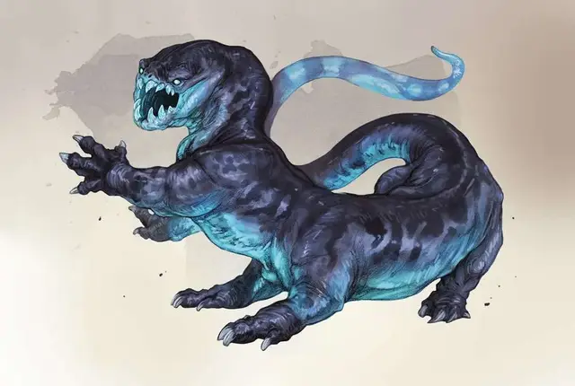

Морозная саламандра
Frost Salamander
Огромный Элементаль, без мировоззрения

Класс Доспеха 17 (природный доспех)
Хиты 168 (16к12 + 64)
Скорость 60 футов, лазая 40 футов, копая 40 футов
| мод | спас | ||
|---|---|---|---|
| СИЛ | 20 | +5 | +5 |
| ЛОВ | 12 | +1 | +1 |
| ТЕЛ | 18 | +4 | +8 |
| мод | спас | ||
|---|---|---|---|
| ИНТ | 7 | −2 | −2 |
| МДР | 11 | +0 | +4 |
| ХАР | 7 | −2 | −2 |
Навыки Восприятие +4
Уязвимость к урону огонь
Иммунитет к урону холод
Чувства тёмное зрение 60 футов, пассивное Восприятие 14, чувство вибрации 60 футов
Языки Первичный
Опасность 9 (5000 опыта)
Бонус мастерства +4
Среда обитания Арктика
Особенности
Полыхающая ярость. Когда саламандра получает урон огнём, её Замораживающее дыхание автоматически перезаряжается.
Действия
Мультиатака. Саламандра совершает пять атак: четыре когтями и одну укусом.
Когти. . Рукопашная атака оружием: +9 к попаданию, досягаемость 10 футов, одна цель. Попадание: 8 (1к6 + 5) колющего урона.
Укус. . Рукопашная атака оружием: +9 к попаданию, досягаемость 15 футов, одна цель. Попадание: 9 (1к8+5) колющего урона и 5 (1к10) урона холодом.
Замораживающее дыхание (перезарядка 6). Саламандра выдыхает ледяной ветер конусом в 60 футов. Каждое существо в этой области должно пройти спасбросок Телосложения Сл 17, получая 44 (8к10) урона холодом при провале и половину этого урона в случае успеха.
Описание
Морозные саламандры – обитатели Плана Льда, более известного как Царство Льда [Frostfell], что расположен между Планом Воздуха и Планом Воды. Морозные саламандры особенно любят охотиться на теплокровных существ. Иногда они посещают холодные климатические зоны Материального Плана, проходя через планарные врата.
Пожиратели тепла. Агрессивное желание морозных саламандр поедать любой источник тепла побуждает их атаковать поселения, с которыми они сталкиваются. Кузнечный огонь или костёр ошибочно принятые морозными саламандрами за большую, вкусную еду, заставляет их атаковать экспедиции и поселения, которых избегали бы другие хищники. Иногда азеры отправляются в Царство Льда, где используют крупные источники огня, чтобы заманить морозных саламандр в ловушки, убить их и содрать шкуры и клыки для использования их в создании орудий и доспехов.
Ложное убежище. Хотя морозные саламандры могут прокапывать путь в рыхлой почве, они предпочитают зарываться в лёд. Саламандры закапываются в груды сломанных кусков льда, позволяя льду царапать себе спину, пока они его размалывают. Эта привычка заставляет морозных саламандр создавать обширные сети ледяных пещер, становясь все крупнее что бы цепляться за свежие сколы льда на стенах их логова.
Морозная саламандра, которая некоторое время обитает в логове, создаёт достаточно места, чтобы небольшая армия могла обустроить лагерь внутри. Неопытные путешественники, которые сталкиваются с подобными пещерами, считают это отличной идеей, чтобы обустроить лагерь, хотя это совершенно не так. Морозные саламандры жадно пожирают любую добычу, которая достаточна безрассудна, чтобы спать в их логове.
В редких случаях, морозные гиганты всё же ловят и приручают этих существ, применяя их способность вкапываться в лёд для сооружения собственных аванпостов и укреплений.